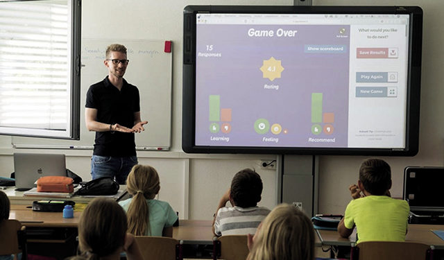

Requirements Elicitation for New Classrooms
Gathering insights to enhance student-teacher communication through digital platforms.
Project Overview
This project focuses on eliciting requirements for a new communication feature within classrooms, addressing challenges in student-teacher interactions and ensuring accessibility across various grade levels.
Key Questions Explored
- Biggest Challenges: What communication difficulties do students and teachers face?
- Goals: What does the new communication feature need to accomplish?
- Usage: How many people use the system daily, and how many need simultaneous access?
- Communication Needs: What issues do students and teachers commonly need to discuss?
- Response Time: How quickly should teachers respond to students?
- Grade-Level Access: Should all grade levels have access to the feature?
Communication Features Inside the Portal
The elicitation process explored different modes of communication that could be integrated into the classroom portal:
- Discussion Boards
- Chat
- Forums
- Announcements
- Video Communication
Communication Features Outside the Portal
To ensure flexibility, the project also considered external communication channels:
- Social Media
- Phone Communication
- Interactive Voice Response (IVR) for automated answers
- Text Messaging
Next Steps
Based on stakeholder input, the next phase involves defining technical specifications, developing a prototype, and conducting user testing to refine the communication feature before implementation.
Download Presentation